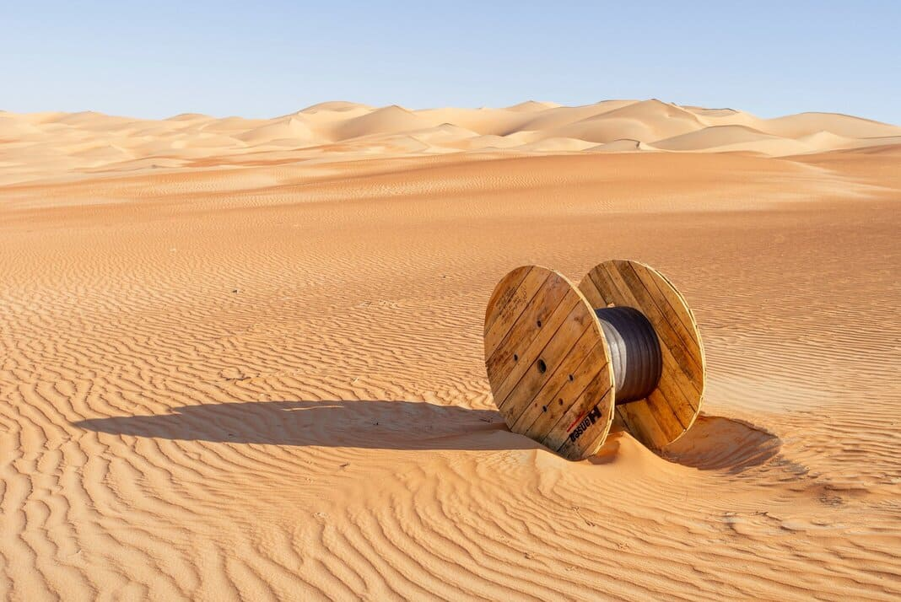

<div class="lost-container">
  <span class="background"></span>
  <svg
    xmlns="http://www.w3.org/2000/svg"
    preserveAspectRatio="none"
    viewBox="0 0 1440 320"
  >
    <path
      class="wave"
      fill-opacity="1"
      d="M0,32L80,48C160,64,320,96,480,101.3C640,107,800,85,960,117.3C1120,149,1280,235,1360,277.3L1440,320L1440,0L1360,0C1280,0,1120,0,960,0C800,0,640,0,480,0C320,0,160,0,80,0L0,0Z"
    ></path>
  </svg>

  <div class="center-container">
    <div class="not-found-container">
      
      <div class="content">
        <div class="title">
          <h4>The requested ressource has not been found.</h4>
        </div>
        <div class="links">
          <button routerLink="portfolio"><span>Home</span></button>
          <button routerLink="portfolio/blog"><span>Blog</span></button>
        </div>
      </div>
    </div>
  </div>
</div>
<app-footer></app-footer>
